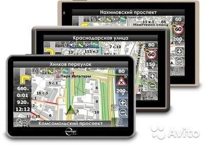
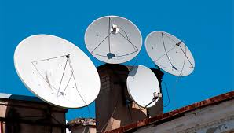
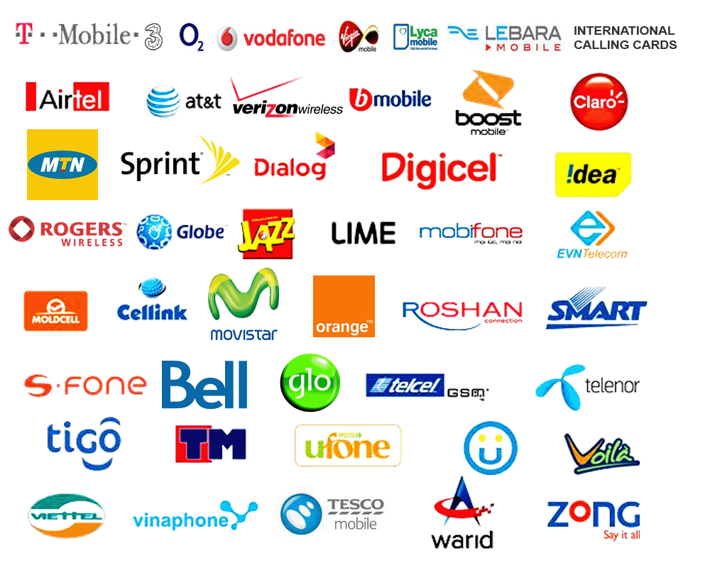
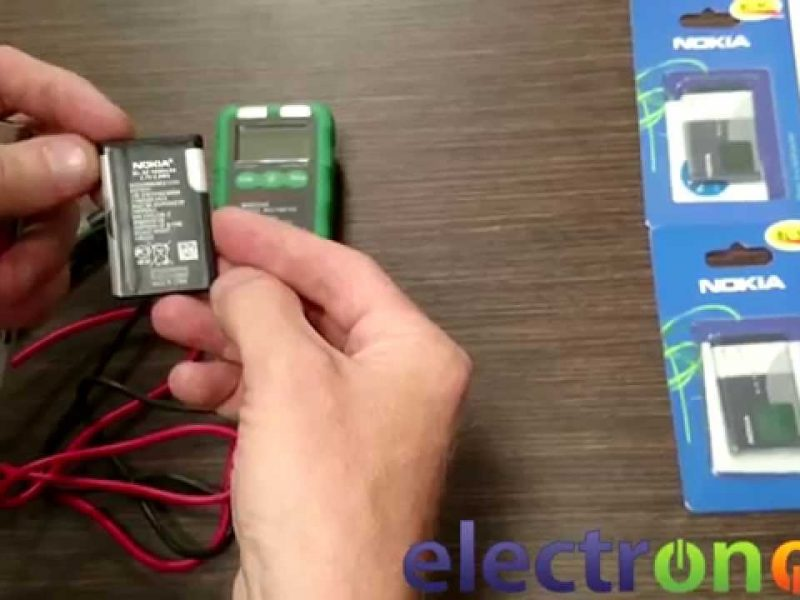
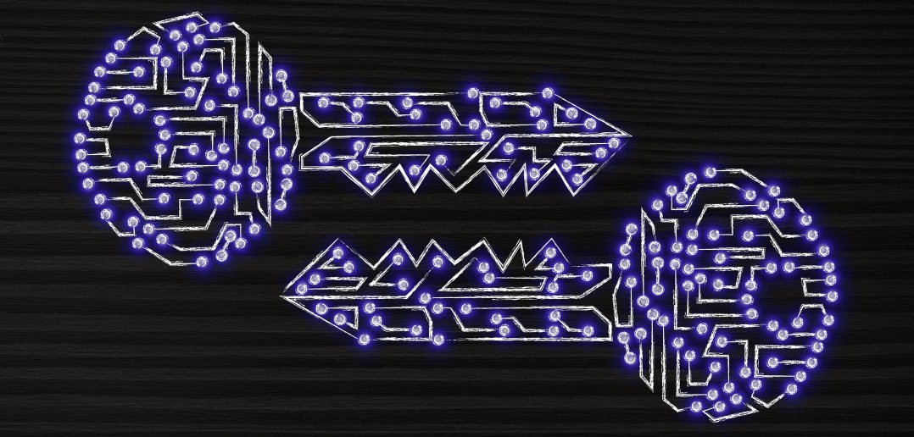
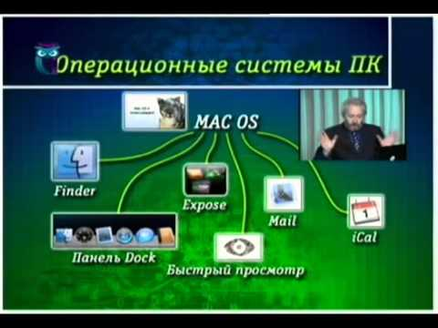

Краткий обзор Спутниковой связи :
 | История спутниковой связи.
| 1. Операторы односторонней спутниковой связи.
| 2. Операторы двухсторонней спутниковой связи.
| 3. Операторы подвижных систем спутниковой связи.
| 4. Магистральные операторы спутниковой связи.
| Краткий обзор технологий.
| О применении спутниковых систем.
| Немного о системах мобильной спутниковой связи.
| Сокращенный обзор систем спутниковой связи.
| Немного о глобальных спутниковых системах.
| Низкоорбитальные спутниковые системы связи.
| Среднеорбитальные спутниковые системы связи.
| Геостационарные системы спутниковой связи.
| Орбиты и параметры спутниковых систем связи.
| Архитектура спутниковых систем связи.
| Спутниковая связь и корпоративные сети.
| Глобалстар (GLOBALSTAR).
| Инмарсат (INMARSAT).
| Иридиум (Iridium).
| Региональные системы .
| КОСПАС-SARSAT .
| «ГЛОНАСС».
| Айко (Ico).
| Thuraya (Турайя).
| VSAT.
| Система «Эшелон».
| Краткое сравнение основных спутниковых систем.
| Введение в военные спутниковые системы.
| Немного о военном применении спутниковых систем.
| Введение в геодезические спутниковые системы.
| Введение в спутниковый интернет.
| Введение в охранные системы.|
| История спутниковой связи.
| 1. Операторы односторонней спутниковой связи.
| 2. Операторы двухсторонней спутниковой связи.
| 3. Операторы подвижных систем спутниковой связи.
| 4. Магистральные операторы спутниковой связи.
| Краткий обзор технологий.
| О применении спутниковых систем.
| Немного о системах мобильной спутниковой связи.
| Сокращенный обзор систем спутниковой связи.
| Немного о глобальных спутниковых системах.
| Низкоорбитальные спутниковые системы связи.
| Среднеорбитальные спутниковые системы связи.
| Геостационарные системы спутниковой связи.
| Орбиты и параметры спутниковых систем связи.
| Архитектура спутниковых систем связи.
| Спутниковая связь и корпоративные сети.
| Глобалстар (GLOBALSTAR).
| Инмарсат (INMARSAT).
| Иридиум (Iridium).
| Региональные системы .
| КОСПАС-SARSAT .
| «ГЛОНАСС».
| Айко (Ico).
| Thuraya (Турайя).
| VSAT.
| Система «Эшелон».
| Краткое сравнение основных спутниковых систем.
| Введение в военные спутниковые системы.
| Немного о военном применении спутниковых систем.
| Введение в геодезические спутниковые системы.
| Введение в спутниковый интернет.
| Введение в охранные системы.|
О Спутниковом Интернете :
 | Что это такое ? .
| Зачем он нужен ? .
| Как работает спутниковый интернет.
| Спутниковый интернет - быстрый интернет.
| Технологии спутникового интернет.
| Асинхронный спутниковый интернет.
| Синхронный спутниковый интернет.
| Спутниковый интернет - мифы и реальность.
| Игры через спутник.
| Спутниковый интернет и Wi-Fi.
| О бесплатном спутниковом интернете.
| Рыбалка через спутник.|
| Что это такое ? .
| Зачем он нужен ? .
| Как работает спутниковый интернет.
| Спутниковый интернет - быстрый интернет.
| Технологии спутникового интернет.
| Асинхронный спутниковый интернет.
| Синхронный спутниковый интернет.
| Спутниковый интернет - мифы и реальность.
| Игры через спутник.
| Спутниковый интернет и Wi-Fi.
| О бесплатном спутниковом интернете.
| Рыбалка через спутник.|
Краткий обзор Мобильного Интернета и связи :
| Краткое введение.
| Мобильный интернет и передача данных.
| Интернет для всех.
| О стандартах мобильной связи.
| Мобильный интернет и рынок.
| Какой мобильный интернет выбрать.
| Без проводов.
| Мобильный интернет, за и против.
| О завтра мобильного интернета|.
| ИК-порт.
| WAP.
| WCDMA.
| Wi-Fi.
| Wibro.
| WiMAX.
| Radio Ethernet.
| Broadband WLL.
| О технологиях G.
| 3G .
| 4G.
| Bluetooth.
| CDMA.
| CSD.
| EDGE.
| GPRS.
| I-mode.
| DECT.
| GSM.
| HSCSD.
| IMT.
| J2ME.
| SMS.
| EMS.
| MMS.
| NMT.
| USSD.
| DAMPS.
| MEI.
| Угрозы.
| Ожидаемые технологии.|
О GPS и автонавигации:

| Что же такое GPS. | Основные понятия GPS. | Как работает GPS. | Основные идеи GPS . | Немного теории для GPS. | Об истории GPS. | Некоторые области использования GPS. | О картах для GPS. | Форматы и типы карт для GPS. | Основные функции GPS. | Погрешности GPS. | GPS и право. | GPS - АИС будущего. | Дифф. системы спутниковой навигации|. | Обзор нескольких навигационных программ. | Обзор навигационных программ под ОС Android . | Немного о современных навигационных программах./ Немного о спутниковых антеннах :

| Что такое спутниковая антенна. | О выборе спутниковой антенны. | Еще о выборе спутниковой антенны. | Немного о типах спутниковых антенн. | О выборе места установки спутниковой антенны . | Пример мобильной спутниковой антенны . | Пример комплектации и установки спутниковой антенны .| Немного о видеосвязи :
 | Алло , я Вас вижу.
| Что это такое ? .
| Стандарты видеосвязи.
| Основы видеосвязи.
| Что такое видеоконференция.
| Основные принципы построения видеоконференций.
| Требования для видеоконференций.
| Требования к помещениям для видеоконференций.
| Видеосвязь и бизнес .
| Технологии видеоконференций.
| Мобильное TV.
| Потоковое видео.
| Что такое вебинар ? .
| Как использовать вебинары?.
| Видеоконференции в локальной сети.
| Облачные видеоконференции.
| FAQ по видеоконференциям.
| Этикет видеоконференций |.
| Алло , я Вас вижу.
| Что это такое ? .
| Стандарты видеосвязи.
| Основы видеосвязи.
| Что такое видеоконференция.
| Основные принципы построения видеоконференций.
| Требования для видеоконференций.
| Требования к помещениям для видеоконференций.
| Видеосвязь и бизнес .
| Технологии видеоконференций.
| Мобильное TV.
| Потоковое видео.
| Что такое вебинар ? .
| Как использовать вебинары?.
| Видеоконференции в локальной сети.
| Облачные видеоконференции.
| FAQ по видеоконференциям.
| Этикет видеоконференций |.
Разное о мобильных устройствах :
 | Основные принципы функционирования сетей сотовой связи.
| Принципиальное устройство мобильного телефона.
| Немного об IMEI .
| О выборе электронного ридера I.
| О выборе электронного ридера II.
| О выборе электронного ридера III.
| О форматах электронных книг I.
| О форматах электронных книг II.
| Краткий обзор производителей мобильных телефонов.
| Курьезы.
| Советы по эксплуатации.
| Краткий словарь терминов.
| Основные принципы функционирования сетей сотовой связи.
| Принципиальное устройство мобильного телефона.
| Немного об IMEI .
| О выборе электронного ридера I.
| О выборе электронного ридера II.
| О выборе электронного ридера III.
| О форматах электронных книг I.
| О форматах электронных книг II.
| Краткий обзор производителей мобильных телефонов.
| Курьезы.
| Советы по эксплуатации.
| Краткий словарь терминов.
Операторы мобильной связи :

| Немного о выборе оператора сотовой связи. | Операторы СНГ. | Крупнейшие Операторы Мира. | Коды операторов. | Без Оператора.| Об аккумуляторах и зарядных устройствах :

| Типы. | Выбор. | Устройство. | Свинцово-кислотные. | Никель-кадмиевые. | Никель-металлгидридные. | Литиевые. | Литий-ионные. | Литий-полимерные. | Эффект памяти . | Эксплуатация. | Методы заряда. | Аккумуляторы для ноутбуков. | Умные. | Универсальное зарядное устройство. | О выборе зарядного устройства. | Краткий обзор зарядных устройств. | Типы зарядных устройств. | Срок эксплуатации аккумулятора. | Саморазряд. | Восстановление. | Зарядка от Солнца. | Зарядка без проводов. | Необычные способы зарядки. | Защита информации в мобильной связи :

| Не болтай . | Краткий обзор проблем . | Защита от несанкционированного съема информации. | О преступности в мобильной связи. | Технологии защиты. | Технологии перехвата. | Средства защиты. | О взломе GSM. | Об угрозах для связи. | О вреде передатчиков. | Что такое Скремблер. | О мошенничестве.| Операционные системы мобильных устройств :

| Общий обзор . | Android. | Palm Nova. | Palm Os. | Symbian. | Windows Mobile. | Немного о КПК. | Для планшетов. | Краткий обзор планшетов.| | Какие бывают планшеты. | Лучшая ОС для планшетов ... | Немного о выборе планшета. | История вирусов для мобильных устройств. | Обзор вирусов для мобильных устройств. | Немного о пожирателях трафика. | Новая ОС от Google.| Вирусы и антивирусы в мобильной связи :
| Немного об их истории .
| Основные понятия.
| Виды и причины распространения.
| Проблемы защиты.
| Антивирус ESET NOD32 Mobile.
| Kaspersky Mobile Security.
| Dr.Web для Windows Mobile.
| Общий обзор антивирусов.
| Вирусы на смартфонах.|
О биллинге и биллинговых системах < БС >:
 | Что такое БС .
| Введение .
| Основные понятия.
| Архитектура.
| О выборе БС.
| Стратегия выбора БС.
| Большой и малый биллинг.
| Краткий обзор ряда известных БС.
| О бизнес-моделях в связи.
| О маркетинге.
| Биллинг и конвергенция.
| Биллинг Интернет-услуг.
| SMS биллинг.
| О мошенничестве в биллинге.
| О воровстве денег со счетов .
| Мобильная слежка . |
| Что такое БС .
| Введение .
| Основные понятия.
| Архитектура.
| О выборе БС.
| Стратегия выбора БС.
| Большой и малый биллинг.
| Краткий обзор ряда известных БС.
| О бизнес-моделях в связи.
| О маркетинге.
| Биллинг и конвергенция.
| Биллинг Интернет-услуг.
| SMS биллинг.
| О мошенничестве в биллинге.
| О воровстве денег со счетов .
| Мобильная слежка . |
Немного о радио :
| Немного о радиоволнах .
| Краткий обзор систем радиосвязи .
| Обзор истории радио.
| О радиоцензуре.
| Азбука Морзе.
| Об антеннах.
| Качество и дальность радиосвязи.
| Мобильная радиосвязь.
| Метеорная радиосвязь.
| О радиопеленгации .
| Методы радиосвязи.
| Снятие информации.
| Перехват.
| Вещание и прием.
| Радиоразведка.
| Подвижная радиосвязь.
| О радиоканалах.
| Радиопомехи.
| Об устранении радиопомех.
| Связь для ЖД.
| Радиозакладки.
| Радиоудлинители.
| Радиомодемы.
| Тропосферная связь.
| Радио в Интернете.
| Интернет-Радио .
| Лучшие каналы Интернет-Радио - online.|
Немного о радиолокации :
 | Что это такое .
| Физические основы .
| Ее история .
| Еще об ее истории .
| Основные понятия.
| Основные цели.
| Основные задачи .
| Типы РЛС .
| Характеристики РЛС .
| О видах радиолокации .
| О помехах .
| Современная радиолокация.
| Перспективы развития .
| Что такое технология " Стелс ".
| " Стелс " - родом из Германии.
| Различное использование " Стелс ".
| Мифы и реальность " Стелс ".
| Перспективы.
| Русская " Стелс ".|
| Что это такое .
| Физические основы .
| Ее история .
| Еще об ее истории .
| Основные понятия.
| Основные цели.
| Основные задачи .
| Типы РЛС .
| Характеристики РЛС .
| О видах радиолокации .
| О помехах .
| Современная радиолокация.
| Перспективы развития .
| Что такое технология " Стелс ".
| " Стелс " - родом из Германии.
| Различное использование " Стелс ".
| Мифы и реальность " Стелс ".
| Перспективы.
| Русская " Стелс ".|
Немного о телевидении :
| Что это такое ?.
| Немного о телевизионных антеннах.
| Цифровое телевидение.
| О стандартах цифрового ТВ.
| Краткий обзор стандартов.
| NTSC.
| PAL.
| SECAM.
| D2MAC.
| HDTV.
| IPTV.
| О спутниковом TV.
| Кабельное.
| Перспективы.
| Принципы.
| Протоколы.
| О 3D-телевидении.
| Типы телевизоров.
| Технология MMDS.
| Технология MVDS.
| Технология LMDS .
| Виды современных телевизоров.
| Технологии современных телевизоров.
| Экраны телевизоров.
| Диагонали экранов телевизоров.
| Разрешение экранов телевизоров.
| Контрастность телевизоров.
| Интерфейсы телевизоров.
| Расстояние до зрителя.
| О пультах для телевизоров.
| Об Интернет-телевидении ...
| Программы основных TV-каналов Украины . |